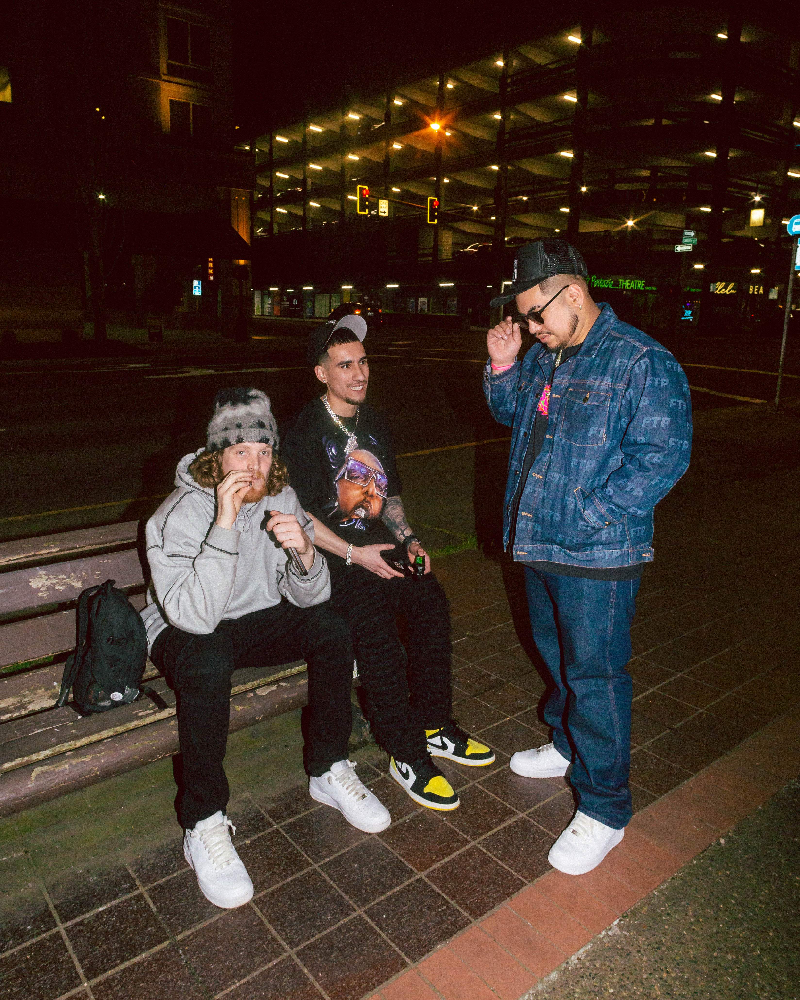
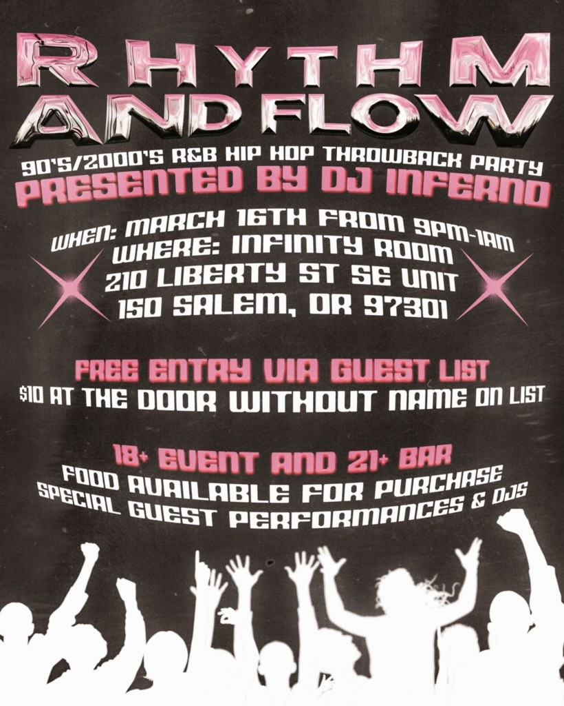
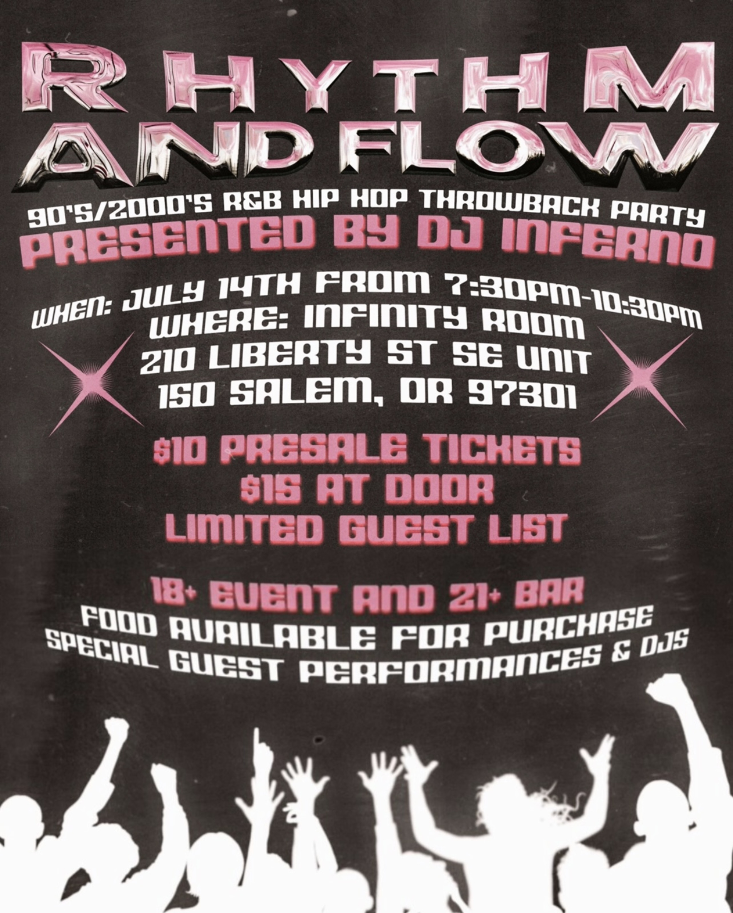
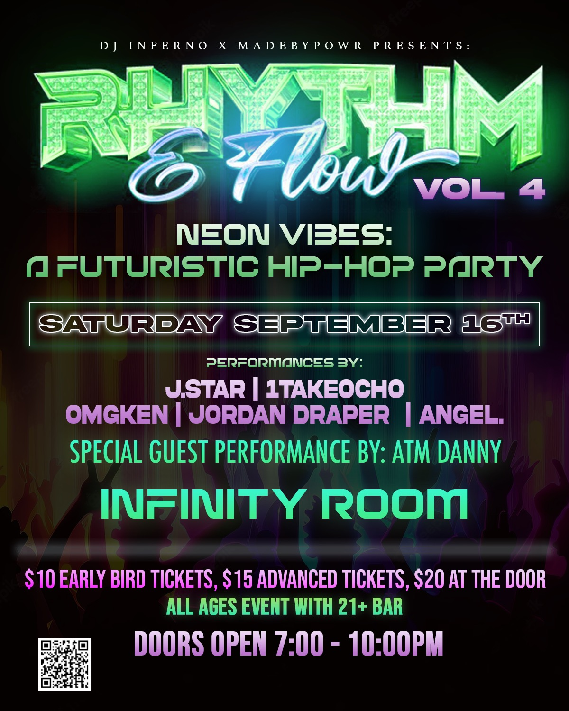
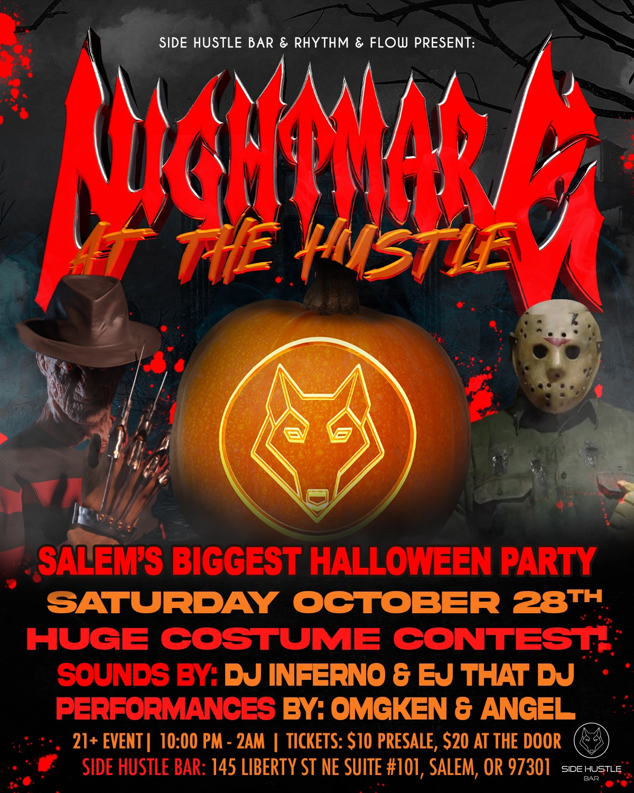
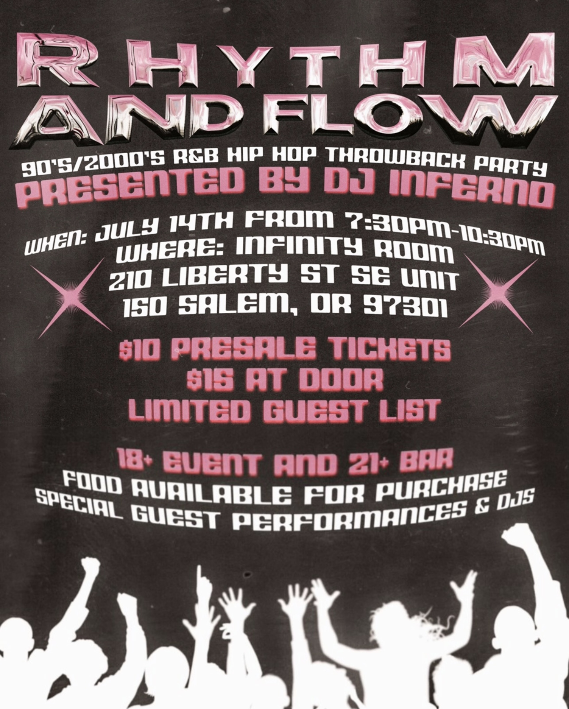
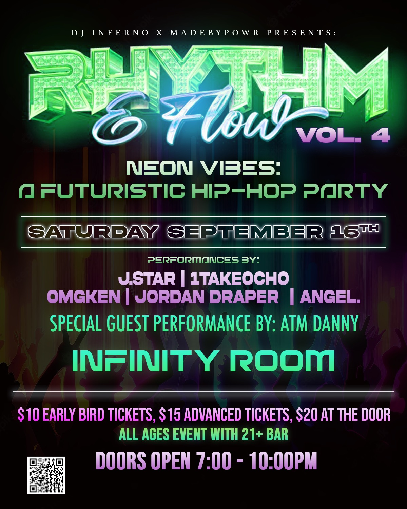
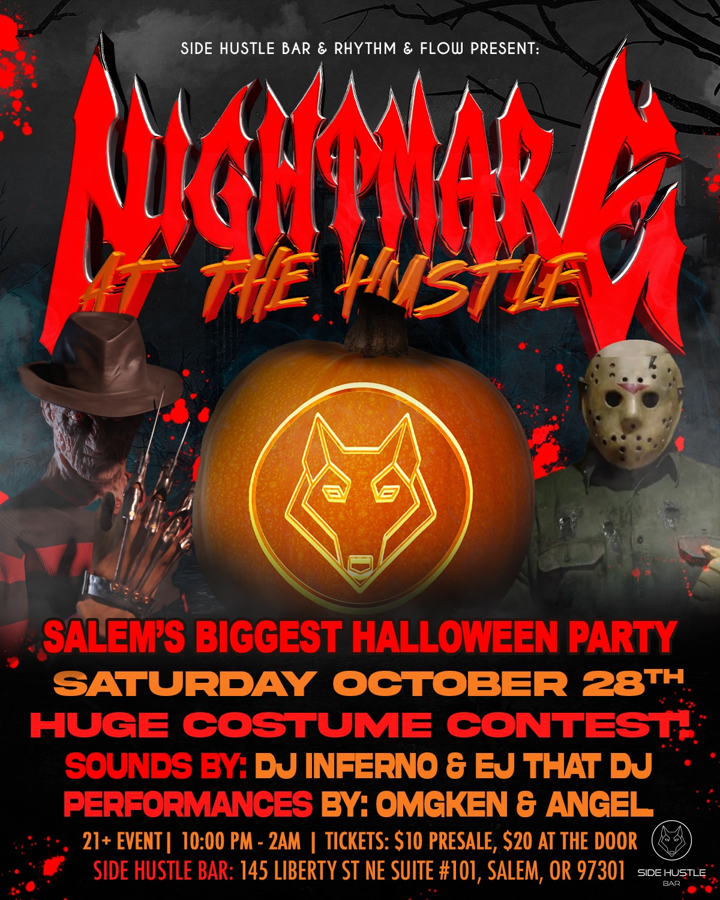
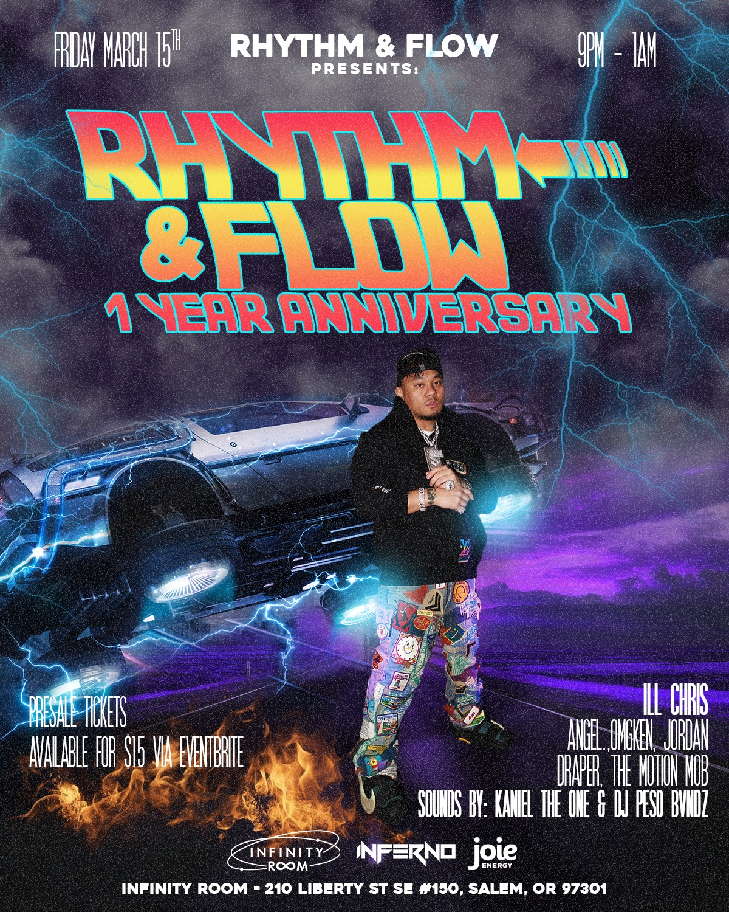
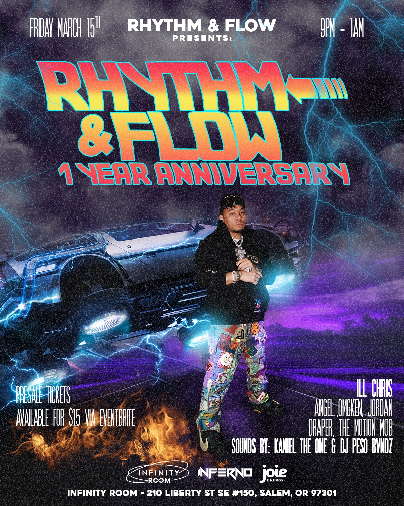

About

Rhythm and Flow was born from the vibrant imagination of Albert Ramon Jr (DJ Inferno) and the creative vision of Miguel Canchola (Madebypowr) in March of 2023. Hailing from the dynamic hip-hop scene of Los Angeles, DJ Inferno discovered a void in the musical landscape upon settling in Salem, Oregon. Motivated by a passion to infuse the Pacific Northwest, particularly Salem, with the energetic vibes of the West Coast, DJ Inferno embarked on a mission to redefine the hip-hop narrative.

What started as a modest event on a random Thursday quickly transformed into a series of five extraordinary shows, each resonating with sold-out audiences. Rhythm and Flow is more than just a musical spectacle—it’s a transformative experience for the community, with a special emphasis on uplifting the minority community, which serves as the heartbeat of hip-hop culture.

Our journey goes beyond the beats; it’s about building a sense of community and empowerment. Rhythm and Flow is a testament to our dedication to creating a space where the beats echo unity and empower.
Rhythm & Flow Mission Statement: Founded by Albert Ramon Jr (DJ Inferno) and Miguel Canchola (Madebypowr), our mission is to redefine the hip-hop landscape in Salem, Oregon. Beyond music, we build a community that celebrates diversity and echoes inclusivity. Join us in changing the game and creating a space where beats unite and empower.
Rhythm & Flow Purpose: At Rhythm and Flow, our purpose is to catalyze positive transformation within communities by redefining the hip-hop experience. Founded by DJ Inferno and Madebypowr, our mission goes beyond music, aiming to empower and uplift minorities—the heartbeat of hip-hop culture. Through a series of extraordinary shows, we create a space where music resonates with inclusivity, fostering unity and celebrating the diverse tapestry of our community.
PAST EVENTS:
    
    
 

 5.4-2-01.png)

 5.17-01.png)